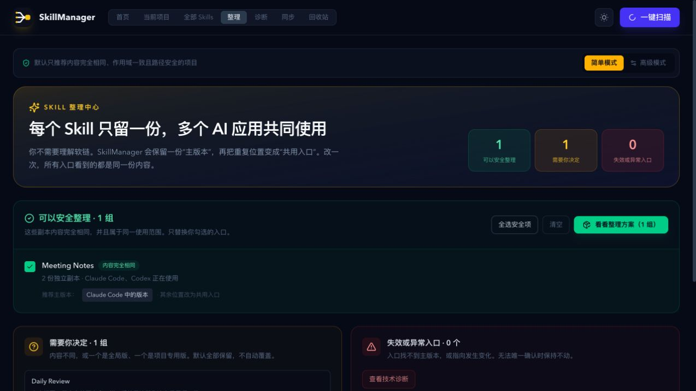

发现
扫描已存在的 Agent 目录，不把“支持某 Agent”误说成“已安装该 Agent”。
SkillManager 在 Codex 内盘点本机 Skills，解释它们在哪些 Agent 中可用，并用“预览 → 确认 → 执行 → 回滚”整理重复副本。你的文件仍在你的电脑上。
默认小白模式只说人话：哪个是主版本、哪些是重复副本、整理后会影响谁。真正写入前必须生成计划，检查文件是否变化，并保留恢复入口。
扫描已存在的 Agent 目录，不把“支持某 Agent”误说成“已安装该 Agent”。
列出唯一主版本、将替换的副本和将建立的共享链接。
只有用户确认后才执行，并用陈旧状态检查阻止误覆盖。
保留快照或废纸篓记录，整理不满意可以恢复。
这是隔离演示数据上的真实 SkillManager Dashboard，不是概念图。简单模式会把“可以安全整理”和“需要你决定”分开，默认不覆盖有分歧的副本。

REAL PRODUCT UI / ISOLATED FIXTURE DATA / NO PERSONAL SKILLS
要求 Node.js 20 或更高版本。安装完成后新建 Codex 任务，输入“打开 SkillManager”。不要再打开本地 file:// 页面。
SkillManager 不运行托管数据收集服务。只有你主动使用 GitHub 同步时才访问 GitHub；令牌存进系统凭据库，本地配置只保留引用。